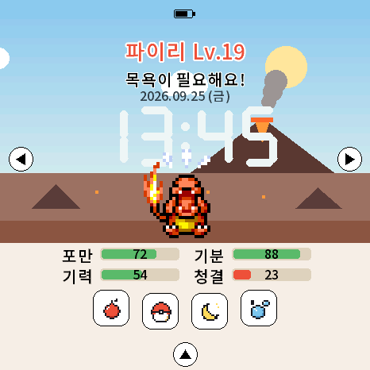
다마포케는 둥근 화면 속에서 포켓몬을 알부터 키우는 작은 기기예요. 먹이고, 씻기고, 재우고, 훈련하고, 야생 포켓몬과 싸우며 도감 251마리를 채워 보세요.
둥근 1.43인치 터치 화면에 버튼 하나. 손가락으로 톡톡 누르고 쓸어서 모든 걸 해요.
| 부분 | 하는 일 |
|---|---|
| 둥근 터치 화면 | 누르기(탭), 쓸기(스와이프), 누르고 있기로 조작해요 |
| PWR 버튼 | 화면 켜기·끄기, 전원 끄기 (아래 표) |
| USB-C | 충전, PC 연결 (펌웨어·SD 파일 보내기) |
| SD카드 | 포켓몬 그림·울음소리·배경음, 세이브 백업, 업데이트 파일 |
| 배터리·시계 | 꺼져 있어도 시간이 흘러요. 돌아오면 그동안의 변화가 반영돼요 |
| 스피커 | 배경음, 울음소리, 효과음 |
| 누르는 법 | 결과 |
|---|---|
| 짧게 한 번 | 화면 끄기 / 켜기. 화면이 꺼져 있어도 포켓몬은 계속 살아 있어요 (배경음은 멈춤) |
| 길게 (약 4초) | 지금까지를 저장한 뒤 전원이 꺼져요 |
| 다시 켜기 | 꺼진 상태에서 PWR을 짧게 누르기 |
| 6초 누르기 | 완전히 껐다 켜기 (업데이트 뒤나 멈췄을 때) |
켜지는 동안 전원 → 화면 → 터치 → 세이브 → SD → 시계 → WiFi → 소리 순서로 준비 단계가 표시돼요. 도중에 멈추면 다음에 켤 때 어디서 멈췄는지 알려 주고, 두 번 연속 멈추면 안전 모드로 켜져요 (33쪽).
처음 켜면 “스타터를 선택하세요” 화면이 나와요. 이상해씨 · 파이리 · 꼬부기 중 하나를 눌러 고르세요. 고른 포켓몬이 알에서 태어나요.
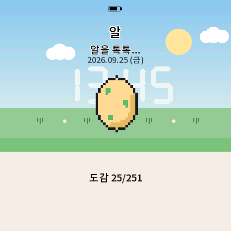
알을 세 번 누르면 “알을 톡톡…”, “움직여요!”, “거의 다 됐어요!” 하다가 태어나요.
태어날 때 포켓몬마다 능력 편차(공격·방어·속도 90~110%)가 정해져서 같은 포켓몬도 조금씩 달라요. 드물게 색이 다른(샤이니) 포켓몬이 태어나기도 해요.
기본 화면 아래 ▲ → 스탯 카드 첫 쪽에서 이름을 누르면 키보드가 나와요. 최대 6글자.
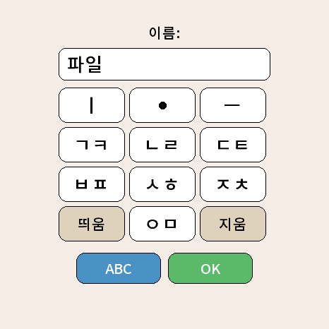
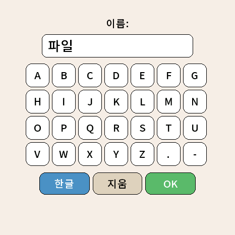
화면 가장자리의 동그란 화살표를 누르거나, 같은 방향으로 쓸어도 돼요.
| 화면 | ◀ 왼쪽 | ▶ 오른쪽 | 맨 아래 |
|---|---|---|---|
| 기본 화면 | 도감 | 시간 설정 | ▲ 스탯 카드 |
| 스탯 카드 (5쪽) | 이전 쪽 | 다음 쪽 | ▼ 닫기 |
| 도감 | 이전 쪽 (첫 쪽: 나가기) | 다음 쪽 | ▼ 나가기 |
| 훈련 / 배틀 메뉴 | 훈련 쪽 | 배틀 쪽 | ▼ 닫기 |
| 시간·네트워크·백업 | 뒤로 가기 | — | — |
| 하고 싶은 것 | 가는 길 |
|---|---|
| 훈련·야생 배틀·체육관 | 돌보기 버튼 중 포켓볼 → 훈련 쪽 / ▶ 배틀 쪽 |
| 보관함·통신 | ▲ 스탯 카드 2쪽(배틀)의 버튼, 또는 배틀 쪽 통신 2인 |
| 사탕 쓰기·사탕 가방 | ▲ 스탯 카드 5쪽 (사탕) |
| 소리·언어·WiFi·새로 시작 | ▶ 시간 설정 화면의 버튼 |
| 세이브 백업·SD 업데이트 | ▶ 시간 설정 → WiFi → 네트워크 화면 |
기본 화면 아래의 네 버튼으로 매일 돌봐 주세요. 잘 돌볼수록 빨리 크고, 강해지고, 친해져요.
| 버튼 | 하는 일 |
|---|---|
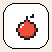 먹이 | 열매 3가지(빨강·파랑·초록)와 사탕 중 하나를 골라 먹여요. 열매 = 포만 +25 · 사탕 = 포만 +10, 기분 +12 (대신 살이 쪄요) |
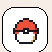 포켓볼 | 훈련 · 배틀 메뉴를 열어요 (4·5장) |
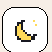 달 | 불 끄고 재우기 / 깨우기. 자는 동안 기력이 빨리 차고 다른 게이지는 천천히 줄어요 |
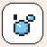 물방울 | 목욕. 청결 100, 똥도 치워요 |
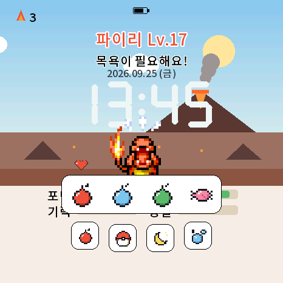
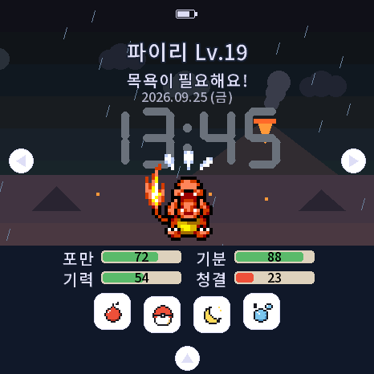
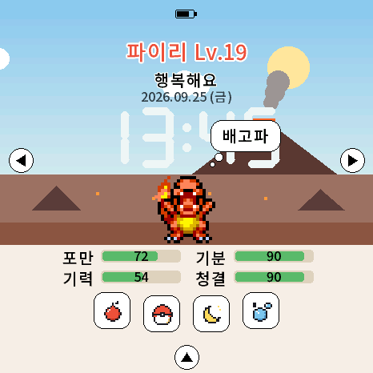
포켓몬마다 좋아하는 음식이 하나 있어요 (빨강·파랑·초록 열매, 사탕 중 하나, 약 1/4은 사탕파). 진화해도 바뀌지 않아요.
포켓몬을 직접 누르면 쓰다듬어요. 기분 +5, 유대감 +1, 울음소리와 함께 포즈를 취하거나 빙글 돌아요.
게이지는 0~100. 초록 = 좋음, 노랑 = 조금 부족, 빨강 = 위험이에요.
| 게이지 | 줄어드는 이유 | 채우는 법 |
|---|---|---|
| 포만 | 깨어 있으면 1분에 2씩 | 먹이 (좋아하는 음식이 최고) |
| 기분 | 1분에 1씩. 배고프거나(30↓) 더러우면(30↓) 더 빨리 | 쓰다듬기, 공놀이, 훈련, 좋아하는 음식 |
| 기력 | 1분에 1씩, 훈련·놀이할 때 많이 | 재우기 (1분에 +6) |
| 청결 | 1분에 1씩 + 똥 1개마다 4씩 더 | 목욕 |
돌봐 줄 때마다 조금씩 올라가요 (먹이 +2, 놀기 +2, 쓰다듬기·목욕 +1). 돌봄 실수를 하면 1 내려가요. 스탯 카드 프로필에서 분홍 막대로 볼 수 있고, 100이면 “유대감 최대” 메달. 친밀도 70이 되어야 진화하는 포켓몬도 있어요 (14쪽).
게이지 하나라도 10 이하로 떨어지면 실수 1회가 기록돼요 (한 번 기록되면 1시간 동안은 다시 세지 않아요).
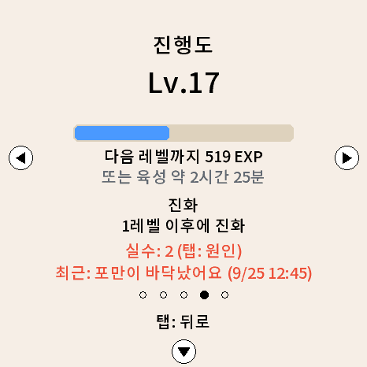
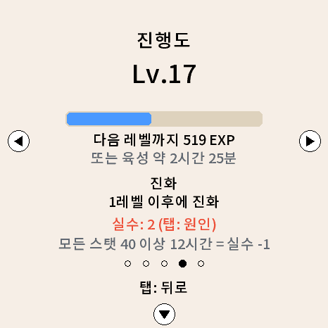
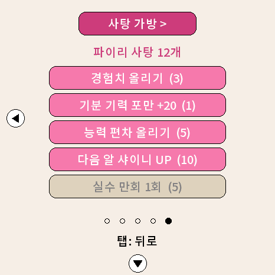
기분이 좋으면 기본 화면에서 이런저런 행동을 해요. 보고만 있어도 즐거워요.
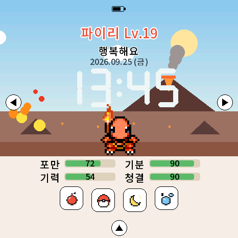
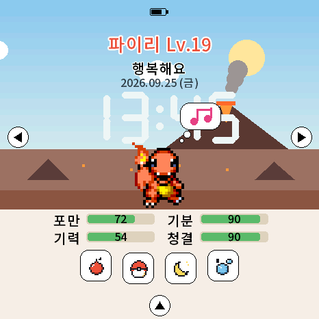
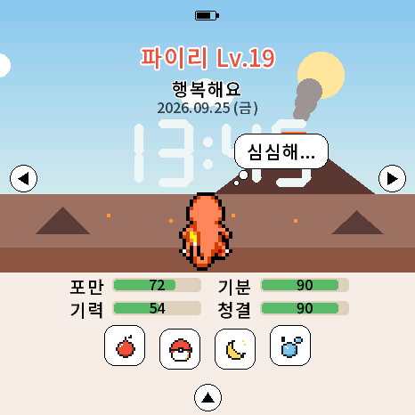
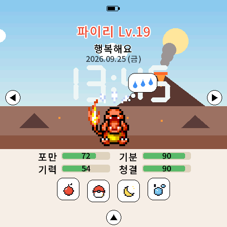
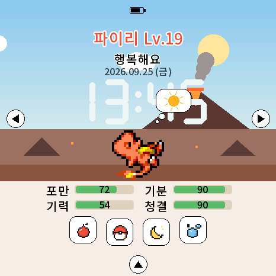
기본 화면 맨 아래 ▲를 누르거나 아래에서 위로 쓸면 열려요. 모두 5쪽이에요.
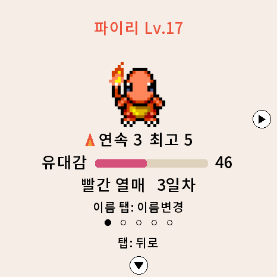
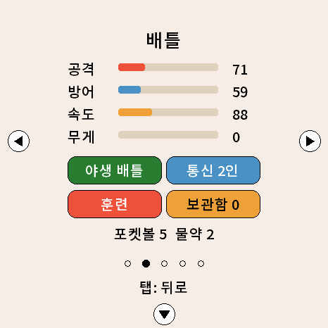
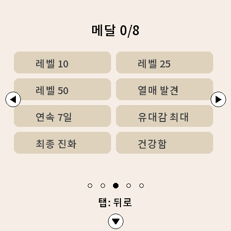
한 포켓몬을 키우는 동안 모아요. 얻으면 “메달!” 알림과 효과음.
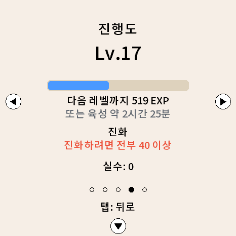
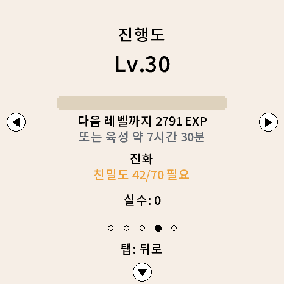
지금 키우는 계열의 사탕 개수와 쓰는 곳이 나와요. 자세한 건 15쪽.
레벨 n이 되려면 n³ EXP가 필요해요 (원작과 같은 방식, 최대 Lv.100). EXP를 얻는 방법은 세 가지예요.
| 방법 | 얻는 양 |
|---|---|
| 배틀 | 이기거나 잡으면 상대 종류 × 상대 레벨만큼 (통신 대전은 절반, 지면 0) |
| 육성 시간 | 시간만 흘러도 레벨 L → L+1 에 L × 15분 (잘 때도 쌓여요. 게이지가 10 이하면 멈춤) |
| 훈련 | 다음 레벨 필요량의 5%, 최고 기록이면 20% + 사탕 1 |
예) 꼬부기 → 어니부기(Lv.16) 약 30시간, 거북왕(Lv.36) 약 6.6일 · 미뇽 → 망나뇽(Lv.55) 약 15.5일 (시간만으로 키울 때)
아래 포켓몬은 레벨과 함께 유대감(친밀도) 70이 필요해요. 카드에 “친밀도 N/70 필요”라고 보여요.
| 포켓몬 | 진화 |
|---|---|
| 피츄 | → 피카츄 |
| 삐 / 푸푸린 | → 삐삐 / 푸린 |
| 토게피 | → 토게틱 |
| 골뱃 | → 크로뱃 |
| 럭키 | → 해피너스 |
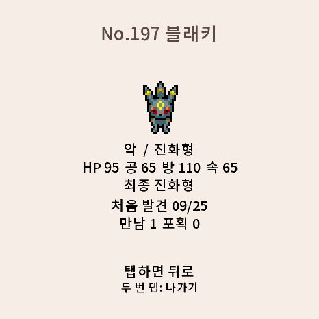
야돈 → 야도란/야도킹, 수륙챙이 → 강챙이/왕구리, 냄새꼬 → 라플레시아/아르코, 배루키 → 홍수몬/시라소몬/카포에라. 도감에 아직 없는 쪽으로 먼저 진화해요.
윤겔라·근육몬·데구리·고우스트, 롱스톤·스라크·시드라·폴리곤 등은 통신 교환으로 진화하지만, 혼자서도 레벨로 진화할 수 있어요 (Lv.40 등).
골뱃→크로뱃, 롱스톤→강철톤, 스라크→핫삼, 시드라→킹드라, 폴리곤→폴리곤2, 럭키→해피너스, 새끼 포켓몬(피츄·삐·푸푸린·뽀뽀라·에레키드·마그비·배루키)
사탕은 포켓몬 계열마다 따로 모여요 (파이리·리자드·리자몽 = 파이리 사탕).
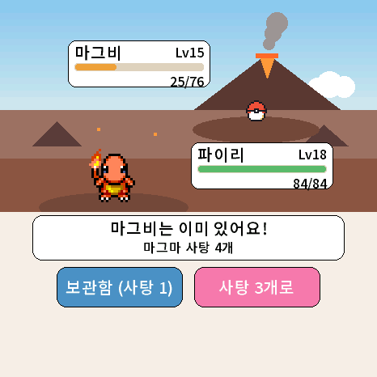
| 메뉴 | 사탕 | 효과 |
|---|---|---|
| 경험치 올리기 | 3 | EXP 획득 |
| 기분 기력 포만 +20 | 1 | 세 게이지 +20 |
| 능력 편차 올리기 | 5 | 능력 편차 +2 |
| 다음 알 샤이니 UP | 10 | 다음 알이 색다를 확률 ×4 (보관함 파트너를 골라도 다음 새 알까지 유지) |
| 실수 만회 1회 | 5 | 돌봄 실수 −1 (실수가 있을 때만) |
5쪽 맨 위 사탕 가방 >
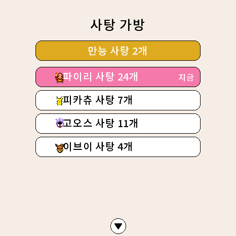
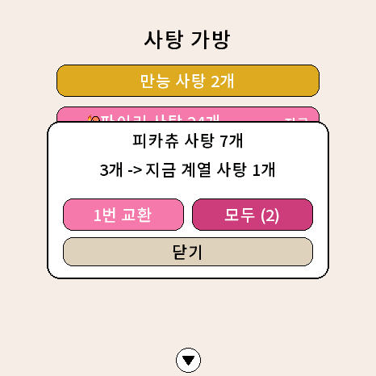
| 끝 | 언제 | 다음은 |
|---|---|---|
| 작별 | 최종 진화 + 3일이 지나면 작별 버튼 → “작별할까요?” [작별] / [계속 함께] | 다음 알이 샤이니일 확률 UP |
| 놓아주기 | 기본 화면에서 포켓몬을 3초 누르고 있기 → “놓아줄까요?” [예] | 다음 파트너 고르기 |
| 가출 | 게이지 모두 0으로 1시간 (9쪽) | 무작위 알만 |
작별하거나 놓아준 포켓몬은 왕관 보관함(최대 251)에 기념으로 남아요. 일반 보관함(60칸)과 따로라서 가득 차도 괜찮아요. 왕관 포켓몬은 놓아줄 수 없어요. 그 계열은 “키운 계열”이 돼요.
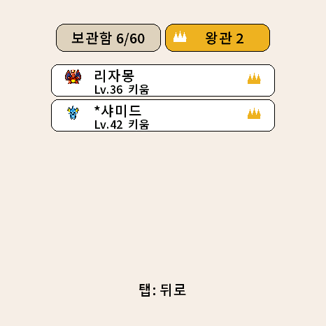
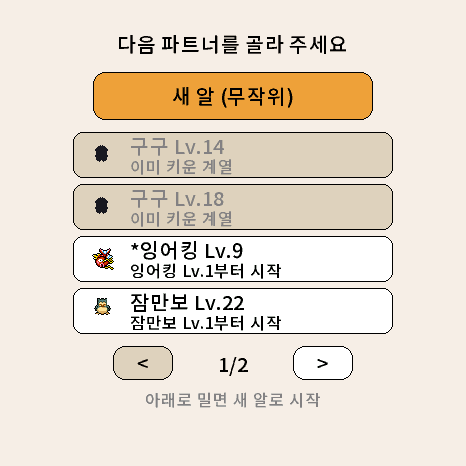
돌보기 버튼 포켓볼 → 훈련 선택. 네 가지 게임으로 능력을 키워요. ▶를 누르면 배틀 쪽이에요.
| 훈련 | 오르는 능력 |
|---|---|
| 공격: 빠르게 연타 | 공격 |
| 방어: 떨어지는 볼 막기 | 방어 |
| 속도: 나타난 볼 터치 | 속도 |
| 공놀이 (기본) | 기분·기력 |
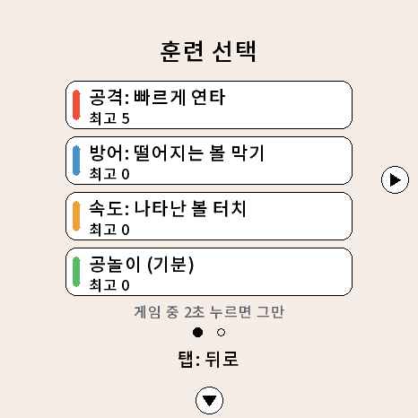
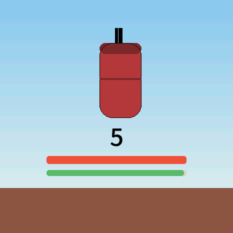
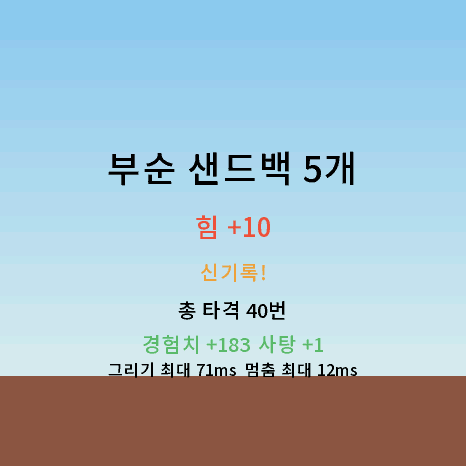
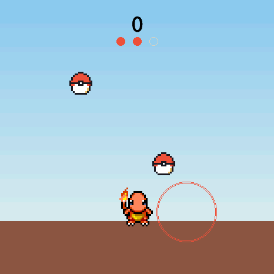
떨어지는 볼을 눌러 막아요. 3번 놓치면 끝이고, 갈수록 빨라지고 자주 떨어져요. 막은 볼 2개 = 방어 +1 (최대 +18).
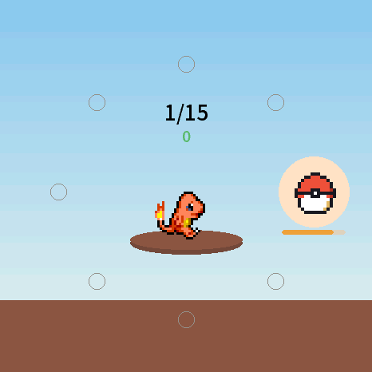
시계 방향 8곳 중 한 곳에 볼이 나타나면 재빨리 터치! 15라운드, 빨리 누를수록 점수 (0.25초 = 75점, 최대 1500점). 결과에 “맞힘 15/15 평균 0.30초”. 맞힌 횟수만큼 속도 UP.
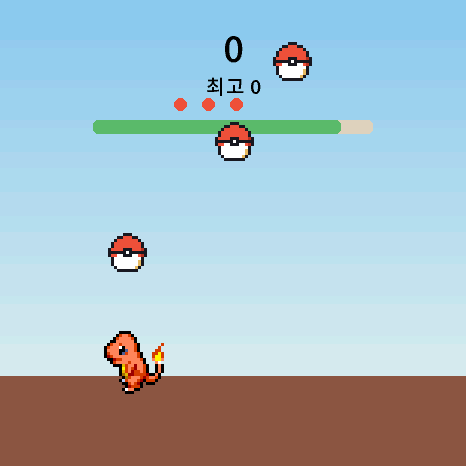
공 3개가 동시에 떨어져요. 손가락을 대는 순간 공을 쳐요. 땅에 닿으면 기회 −1 (3번), 30초. 최고 기록을 넘으면 기분+기력, 못 넘어도 1번 이상 치면 기력 +5.
| 결과 | 보상 |
|---|---|
| 1점 이상 | 능력 최소 +3 (최대 100) · EXP 다음 레벨의 5% · 기분 +6 |
| 최고 기록 갱신 | EXP 20% + 키우는 계열 사탕 1개 + “신기록!” |
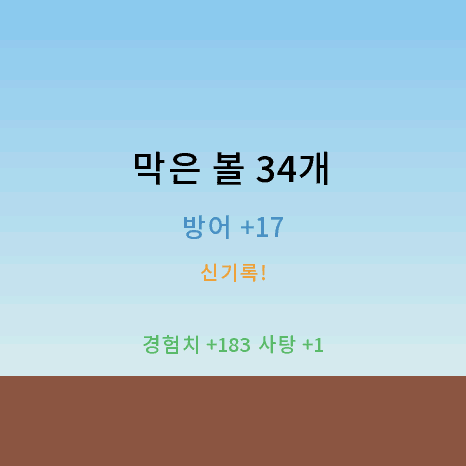
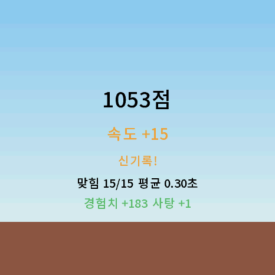
포켓볼 버튼 → ▶ 배틀 쪽 → 야생 배틀. 지역을 고르면 그 지역 포켓몬이 나타나요. 한 쪽에 8곳씩 2쪽 (옆으로 넘기기). 주황 테두리 = 내 포켓몬 속성의 지역.
| 지역 (속성) | 지역 (속성) |
|---|---|
| 초원 (노말) | 늪 (독) |
| 바닷가 (물) | 사막 (땅) 배지 7 |
| 숲 (풀) | 유적 (에스퍼) 배지 5 |
| 화산 (불꽃) 배지 6 | 꽃밭 (벌레) |
| 산 (바위) | 묘지 (고스트) 배지 2 |
| 설원 (얼음) 배지 3 | 용의 계곡 (드래곤) 배지 8 |
| 발전소 (전기) | 도시 (악) |
| 도장 (격투) 배지 1 | 광산 (강철) 배지 4 |
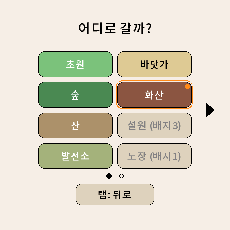
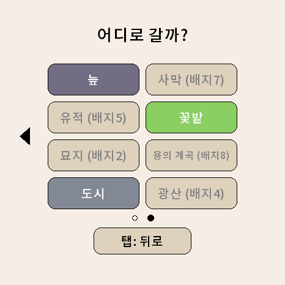
처음엔 8곳이 열려 있어요. 체육관 배지를 하나 딸 때마다 한 곳씩 열려요: 도장 → 묘지 → 설원 → 광산 → 유적 → 화산 → 사막 → 용의 계곡. 내 포켓몬 속성의 지역은 언제나 열려 있어요.
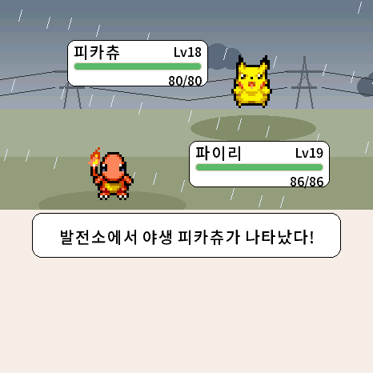
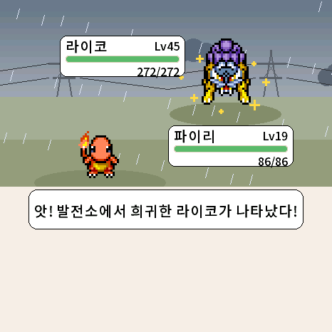
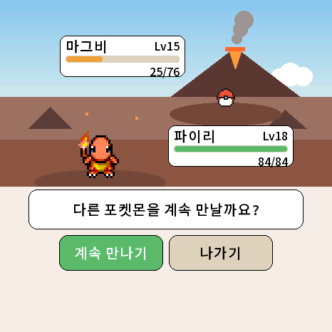
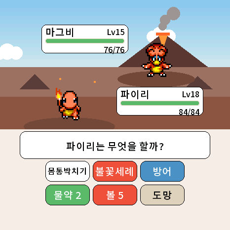
| 버튼 | 하는 일 |
|---|---|
| 몸통박치기 | 기본 공격 |
| 속성 기술 | 내 속성 기술 (진화하면 더 강한 기술) |
| 방어 | 이번 공격을 막아요 |
| 물약 N | 체력 절반 회복 |
| 볼 N | 포켓볼 던지기 (야생만) |
| 도망 | 배틀에서 빠져나가기 (야생만) |
상대 체력이 적을수록 잘 잡혀요. 체력 가득 약 20% → 거의 쓰러짐 약 85%. 희귀 포켓몬은 조금, 전설은 훨씬 어려워요. 잡은 포켓몬은 보관함으로 가요 (최대 60).
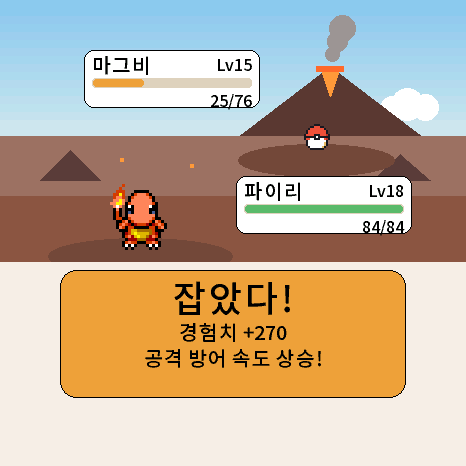
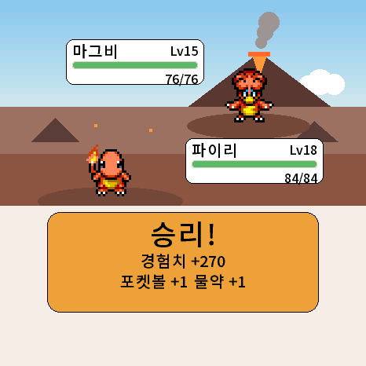
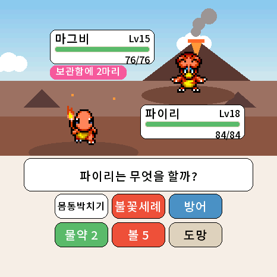
새 포켓몬이 더 자주 나와요: 이미 본 포켓몬은 45%만 그대로 나오고 다시 뽑아요.
| 포켓몬 | 조건 | 포켓몬 | 조건 |
|---|---|---|---|
| 라이코 | 발전소 + 비 | 썬더 | 발전소 + 낮 |
| 앤테이 | 화산 + 여름 햇볕 | 파이어 | 화산 + 여름 |
| 스이쿤 | 바닷가 + 비 | 루기아 | 바닷가 + 밤 |
| 프리져 | 설원 + 눈 | 칠색조 | 여름 햇볕 + 새벽 |
| 세레비 | 숲 + 벚꽃 | 뮤 | 유적 + 밤 |
| 뮤츠 | 광산 + 밤 | 희귀 1%: 라프라스·잠만보·럭키·스라크·헤라크로스·애버라스·무장조 등 | |
가끔 기본 화면에 야생 포켓몬이 나타나요. 30초 안에 누르면 내 포켓몬 속성의 지역에서 바로 배틀!
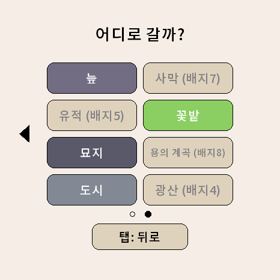
지역 선택 화면 위에 오늘의 이벤트가 보여요.
| 요일 | 이벤트 |
|---|---|
| 월 | 물 포켓몬이 자주 (4마리 중 1마리) |
| 화 | 불꽃 포켓몬이 자주 |
| 수 | 풀 포켓몬이 자주 |
| 목 | 전기 포켓몬이 자주 |
| 금 | 에스퍼 포켓몬이 자주 |
| 토·일 | 색이 다른(샤이니) 포켓몬 2배 |
| 보름달 밤 | (20~6시) 전설 포켓몬 3배 |
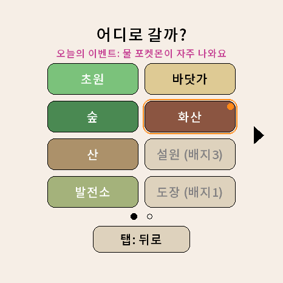
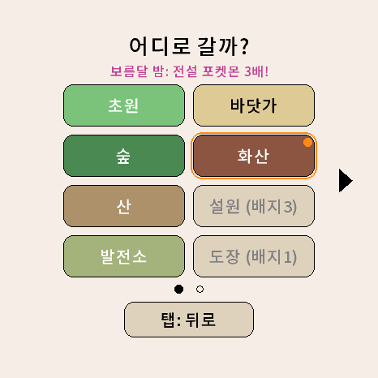
기술은 진화 단계에 따라 기본 → 중간 → 최종으로 바뀌어요 (예: 물대포 → 물의파동 → 하이드로펌프). 속성마다 불씨·물보라·덩굴채찍·번개·냉동빔 같은 이펙트가 있고, 최종 기술은 광선과 큰 폭발로 화면이 흔들려요. 급소면 화면이 흔들리고, 효과가 굉장했다면 흰 충격파가 퍼져요.
배틀 쪽 체육관 N/8. 관장을 순서대로 이기고 배지를 모아요. 배지를 따면 새 지역이 열려요.
| # | 관장 | 체육관 | 포켓몬 |
|---|---|---|---|
| 1 | 웅 | 산 | 바위 |
| 2 | 이슬 | 바닷가 | 물 |
| 3 | 마티스 | 발전소 | 전기 |
| 4 | 민화 | 숲 | 풀 |
| 5 | 독수 | 늪 | 독 |
| 6 | 초련 | 유적 | 에스퍼 |
| 7 | 강연 | 화산 | 불꽃 |
| 8 | 비주기 | 사막 | 땅 |
배지를 딴 체육관은 다시 도전할 수 있어요. 그 속성의 포켓몬 무작위 3~4마리(전설 제외), 레벨은 내 레벨 −1~+2.
체육관마다 하루 1번 사탕 +2 · 볼 +1 · 물약 +1. 목록에 “재대전 N승 (오늘 보상 있음/받음)”.
체육관 목록 3쪽, 배지 8개부터 챔피언 도전!
우승한 포켓몬의 이름·레벨·날짜·능력 편차가 기록돼요 (최대 60, 왕관 보관함과 따로). 명예의 전당 (N) → 3×3 목록(최신 순) → 누르면 큰 그림 + 왕관, “N번째 챔피언 N연승”. 좌우로 쪽 넘기기.
배틀 쪽 오늘의 도전. 날짜마다 지역 1곳과 상대 3마리가 정해져요 (하루 동안 같음). 3연승하면 하루 1번 볼 +2 · 물약 +2 · 사탕 +3.
잡거나 합류한 포켓몬이 모이는 곳. 스탯 카드 2쪽 보관함 N.
도감 번호·레벨·타입·어떻게 들어왔는지. 아래 버튼 3개:
“다음 육성 포켓몬은 여기서 나와요” — 육성을 마치면 보관함 포켓몬을 다음 파트너로 고를 수 있어요 (16쪽).
보관함 포켓몬을 고향 지역으로 탐험 보내 선물을 받아 와요.
| 선물 | 2시간 | 4시간 | 8시간 |
|---|---|---|---|
| 그 포켓몬 사탕 | 3 | 6 | 12 |
| 만능 사탕 | 3% | 10% | 30% |
| 새 포켓몬 (그 지역) | 10% | 20% | 40% |
| 포켓볼 | 1 | 2 | 4 |
| 물약 | 1 | 1 | 2 |
Lv.30 이상인 포켓몬은 사탕을 더 가져와요 (+1 · +2 · +4).
기본 화면 ◀. 1세대와 2세대를 합친 251마리, 16쪽 (2세대는 11쪽부터, 아래 점이 주황색).
| 종 수 | 보상 | 종 수 | 보상 |
|---|---|---|---|
| 10종 | 볼 +5 | 151종 | 만능 사탕 +5 · 샤이니 부적 |
| 30종 | 물약 +5 | 200종 | 만능 사탕 +5 |
| 50종 | 만능 사탕 +1 | 251종 | 만능 사탕 +10 · 샤이니 부적 |
| 100종 | 만능 사탕 +3 |
날씨는 5분마다 계절에 맞는 확률로 바뀌어요. 배경은 시간에 따라 새벽·낮·노을·밤으로 물들어요. 기본 화면은 내 포켓몬 속성의 장소, 야생 배틀은 고른 지역이 배경이에요.
다마포케 두 대가 가까이 있으면 WiFi 공유기 없이 직접 연결돼요 (ESP-NOW).
“다른 기기도 통신을 여세요” — 상대가 같은 화면을 열 때까지 기다려요. 위쪽 탭 = 닫기.
배터리가 다 되어 시계가 초기화되었을 때, 시간이 맞는 친구 기기와 통신하면 시간을 자동으로 받아 와요.
배틀 쪽 아래 “야생승 N 통신 N/N 교환 N”에 기록이 쌓여요.
기본 화면 ▶. 나갈 땐 ◀ (시간은 바뀌지 않아요).
KO >를 누를 때마다 한국어 · English · Español · Français · Deutsch · Italiano · Português · 日本語.
시간 설정 → 새로 시작 → 빨간 버튼을 3초 동안 누르고 있기. 포켓몬·도감·보관함·메달·기록·아이템이 모두 지워지고 스타터 고르기부터 다시 시작해요. WiFi·소리·언어 설정과 SD카드 파일은 남아요.
WiFi는 시간을 맞추는 데만 써요. 시간이 맞아야 날짜·요일 이벤트·날씨·계절이 제대로 움직여요.
| 버튼 | 하는 일 |
|---|---|
| 시간대 -+ | 한국은 UTC+9:00 |
| 지금 시간 맞추기 | 저장된 WiFi로 바로 맞춤 |
| WiFi 설정하기 | 휴대폰으로 WiFi 등록 (아래) |
| 자동 켬 | 켤 때 + 하루 1번 자동으로 맞춤 |
| 개방 WiFi 켬 | 비밀번호 없는 WiFi로도 시간만 받기 |
| SD 업데이트 | 펌웨어 업데이트 (33쪽) |
| 세이브 백업 | SD카드 백업·복원 (32쪽) |
| 파일 (mons 폴더) | 내용 |
|---|---|
| p001~p251.bin, ps001~ps251.bin | 포켓몬 그림 / 색이 다른(샤이니) 그림 (동작 포함) |
| thumbs.bin | 도감의 작은 그림 251마리 |
| cry001~cry251.wav | 울음소리 (16kHz 모노 16비트 WAV) |
| bgm.wav, bgm2.wav | 기본 화면 배경음 (곡이 끝날 때마다 무작위) |
| battle_wild / gym / champ.wav | 야생 · 체육관 · 챔피언 배틀 배경음 |
| fame.wav, fame2.wav | 명예의 전당 (챔피언 쪽 화면) |
| update.bin | SD 업데이트용 펌웨어 (다 쓰면 update_done.bin) |
파일이 없으면 “스프라이트 없음”이나 작은 그림·기본 곡으로 대신해요. 울음소리·음악은 개인용으로만 써 주세요.
네트워크 → 세이브 백업. SD카드 tpsave/save0.bak · save1.bak에 번갈아 저장해요 (쓰고 다시 읽어 확인).
새 기능이 담긴 펌웨어로 바꿔요. 두 방법 모두 포켓몬은 그대로 남아요.
새 펌웨어를 예비 영역에 다 쓰고 검사가 끝난 뒤에만 바꿔요. 도중에 실패하면 원래 펌웨어 그대로예요.
| 증상 | 해 보세요 |
|---|---|
| 화면이 안 켜져요 | PWR 짧게 → 충전 확인 → PWR 6초로 껐다 켜기 |
| 켜지다가 계속 다시 시작돼요 | PWR 버튼이 케이스에 눌린 채 끼워지지 않았는지 확인. “last stop” 화면을 사진으로 남겨 두세요. 2번 연속이면 안전 모드로 켜져요 |
| PC가 USB를 인식 못 해요 | 다른 USB 케이블(데이터용)로. 그래도 안 되면 BOOT 버튼을 누른 채 USB를 꽂기 |
| 포켓몬이 “?”나 작은 그림 | SD카드 mons 폴더에 그림 파일(p/ps***.bin, thumbs.bin)이 있는지 확인 |
| 소리가 안 나요 | 시간 설정 → 소리 켬, 음량 확인. 배경음은 SD카드의 wav 파일이 필요해요 |
| 시간이 틀려요 | 네트워크 → 시간대(UTC+9) 확인 → 지금 시간 맞추기. WiFi가 없으면 시간 설정에서 직접 |
| 날씨가 늘 맑아요 | 날짜가 맞는지 확인 (큰 시계 위 날짜). WiFi로 한 번 맞추면 돼요 |
| 진화 버튼이 안 나와요 | 네 게이지 모두 40 이상? 실수로 늦어졌나? 친밀도 70 필요한 포켓몬? (스탯 카드 진행도) |
| 지역이 회색이에요 | 체육관 배지가 더 필요해요 (19쪽) |
| 통신 연결이 안 돼요 | 두 기기 모두 같은 메뉴(대전/교환)를 열었는지, 펌웨어 버전이 비슷한지 확인 |
| 세이브가 사라졌어요 | 네트워크 → 세이브 백업에서 복원 (켤 때 물어보기도 해요) |
| 메뉴 터치가 가끔 안 먹어요 | 화면이 바뀐 직후 0.25초는 터치를 무시해요. 한 번 더 또렷하게 톡 |
| 훈련 중 그만두고 싶어요 | 화면을 2초 누르고 있기 |
| 전부 처음부터 하고 싶어요 | 시간 설정 → 새로 시작 → 3초 누르기 (30쪽) |
| 돌보기·성장 | |
|---|---|
| 먹이 | 열매 +25, 좋아하는 것 +35, 사탕 +10 |
| 돌봄 실수 | 게이지 10 이하 (1시간에 1번까지) |
| 실수 회복 | 모두 40↑ 12시간 → −1 |
| 가출 | 게이지 모두 0으로 1시간 |
| 작별 | 최종 진화 + 3일 |
| 진화 | 레벨 + 모두 40↑ (+친밀도 70) |
| 첫 진화 | Lv.16 (3단계 포켓몬) |
| 육성 시간 | Lv.L → L+1 = L × 15분 |
| 최대 레벨 | Lv.100 |
| 기력 회복 | 잠자기 1분에 +6 |
| 훈련 | |
|---|---|
| 기력 소모 | 한 번에 −12 |
| 능력 상승 | 최소 +3, 한 번 최대 +18 |
| EXP | 5% (신기록 20% + 사탕 1) |
| 속도 점수 | 15라운드, 최대 1500 |
| 배틀·보상 | |
|---|---|
| 야생 승리 | 볼 40%, 물약 35%, 만능 사탕 5%, 합류 20% |
| 보유 상한 | 볼 20, 물약 15 |
| 포획률 | 체력 가득 약 20% → 빈사 약 85% |
| 재대전 | 하루 1번 사탕 2·볼 1·물약 1 |
| 오늘의 도전 | 3연승 볼 2·물약 2·사탕 3 |
| 챔피언 | 사탕 10·볼 3·물약 3 |
| 물약 | 체력 절반 회복 |
| 야생 알림 | 30초 안에 누르기 |
| 모으기·저장 | |
|---|---|
| 보관함 | 60 (왕관 251, 전당 60) |
| 탐험 | 2·4·8시간, 1마리씩 |
| 도감 | 251 (보상 10~251종) |
| WiFi 기억 | 최대 5개 |
| 자동 저장 | 1분마다 + SD 백업 하루 1번 |
| 날씨 바뀜 | 5분마다 |
경험치 3 · 게이지 +20 1 · 능력 편차 +2 5 · 다음 알 샤이니 ×4 10 · 실수 만회 5 · 교환 다른 계열 3 → 1 · 만능 1 → 5